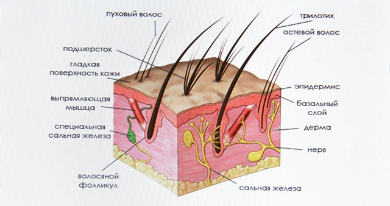
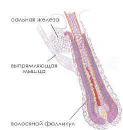

Кожа и шерсть
Кожа и шерсть кошки – зеркало здоровья. Шерсть и кожа выполняют роль буфера и предохраняют организм от внешних воздействий (ультрафиолет, механические, химические повреждения и микроорганизмы).
Верхний слой кожи называется эпидермисом. Мы можем сравнить строение эпидермиса с кирпичной стеной, где клетки (эпителиоциты) являются "кирпичиками", а керамидные вещества являются "раствором". При оптимальном снабжении кожи жирными кислотами вырабатывается достаточное количество керамидных веществ, и "кирпичики" клеток крепко держатся в "стене".Это и обеспечивает барьерную функцию кожи, то есть - сохранение внутренней среды организма и защита от внешних воздействий.
В коже кошки есть два основных слоя: эпидермис и дерма. Прочная эластичная дерма расположена под примерно 40 слоями отмерших клеток (собственно эпидермис) и 4 слоями живых клеток, составляющих базальный слой. В толще дермы находятся кровеносные капилляры, волосяные фолликулы, нервные окончания, которые проводят сигналы от волос и кожи, а также специальные сальные железы, реагирующие на нервные сигналы.
Каждый волосяной фолликул имеет свою собственную сальную железу, которая вырабатывает кожное сало, придающее шерсти блеск. Особые сальные железы в области ануса и между пальцами лап вырабатывают половые запахи феромоны. С помощью сальных желез, расположенных на мордочке, кошки метят территорию.
Поверхность волоса состоит из наслаивающихся друг на друга кутикулярных клеток, которые отражают свет и придают шерсти характерный блеск. Тусклая шерсть может указывать на повреждение кутикулы.
У кошек волосяные фолликулы имеют сложную структуру: из каждой фолликулы растет до шести остевых волос, каждый из которых окружен тонкими пуховыми (прямыми или волнистыми) волосами. Фолликул снабжен собственной мышцей-поднимате-лем, которая заставляет волосы вставать дыбом. Кошки взъерошивают шерсть не только при беспокойстве или испуге, но и для того, чтобы уменьшить потерю тепла в стужу.
У кошки есть два типа волос, предназначенных для осязания. Усы, или вибриссы, - толстые жесткие волосы на голове, горле и передних лапах. Крупные одиночные волосы (тилотрихи) рассеяны по всей коже и функционируют как своего рода короткие усы.